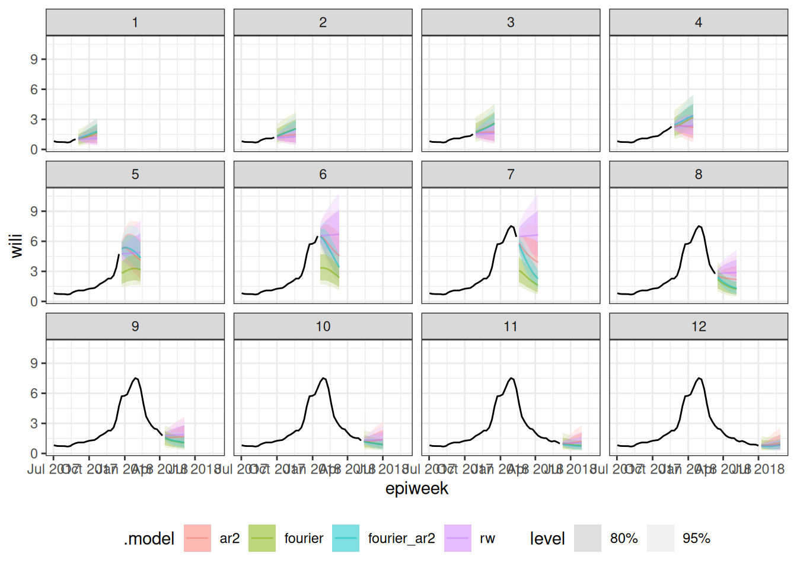
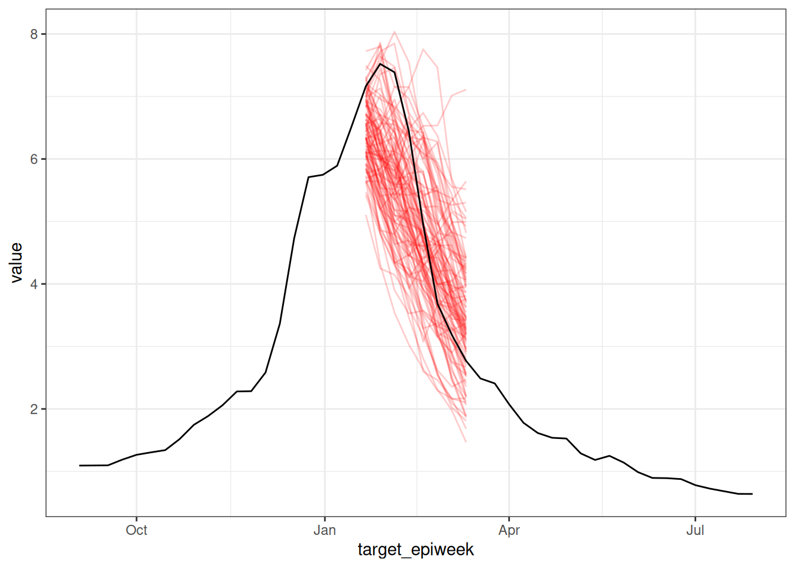
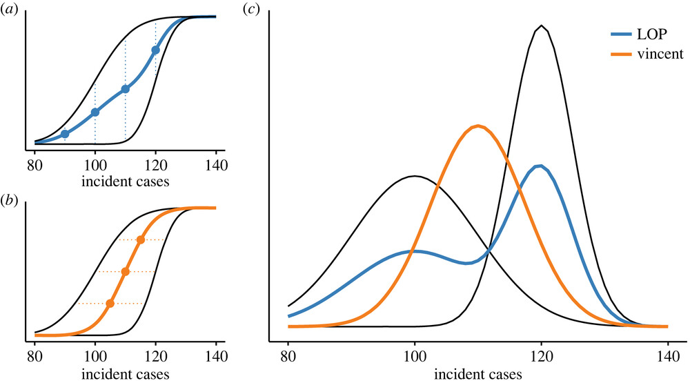

library('nfidd')
library("fable")
library("dplyr")
library("ggplot2")
library("epidatr")
library("hubUtils")
library("hubEvals")
library("hubEnsembles")
theme_set(theme_bw())Forecast ensembles
Introduction
As we saw in the sessions on improving forecasting models and forecast evaluation, different modelling approaches have different strength and weaknesses, and we do not usually know in advance which one will produce the best forecast in any given situation. One way to attempt to draw strength from a diversity of approaches is the creation of so-called forecast ensembles from the forecasts produced by different models.
In this session, we’ll start with forecasts from the models we explored in the previous sessions and build ensembles of these models. We will then compare the performance of these ensembles to the individual models and to each other.
NoteRepresentations of probabilistic forecasts
Probabilistic predictions can be described as coming from a probabilistic probability distributions. In general, it is not safe to assume that these distributions can be expressed in a simple mathematical form as we can do if, e.g., talking about common probability distributions such as the normal or gamma distributions. (Although some of the fable models, like ARIMA can express forecasts as normal distributions.)
It can be helpful to have a model-agnostic way to represent probabilistic distributions.
One common way is to use a limited number (say, between 100 and 1000) of samples generated from Monte Carlo methods to represent the predictive distribution.
Another approach uses values that corresponds to a specific set of quantile levels of the predictive distribution distribution. For example, the median is the 50th quantile of a distribution, meaning that 50% of the values in the distribution are less than the median and 50% are greater. Similarly, the 90th quantile is the value that corresponds to 90% of the distribution being less than this value. If we characterise a predictive distribution by its quantiles, we specify these values at a range of specific quantile levels, e.g. from 5% to 95% in 5% steps.
Another approach might be to define bins (intervals) that an outcome might fall into and assign probabilities to those bins
Deciding how to represent forecasts depends on many things, for example the method used (and whether it produces samples by default) but also logistical considerations. Many collaborative forecasting projects and so-called forecasting hubs use quantile-based representations of forecasts in the hope to be able to characterise both the centre and tails of the distributions more reliably and with less demand on storage space than a sample-based representation. Quantiles are also better than a bin-based representation when the range of possible outcomes is large.
Slides
Objectives
The aim of this session is to introduce the concept of ensembles of forecasts and to evaluate the performance of ensembles of the models we explored in the earlier sessions.
NoteSetup
Source file
The source file of this session is located at sessions/forecast-ensembles.qmd.
Libraries used
In this session we will use the fable package for fitting simple forecasting models, the dplyr package for data wrangling, the ggplot2 library for plotting and the epidatr package for accessing and downloading versions of epidemiological surveillance data from the Delphi EpiData API.
Additionally, we will use some hubverse packages such as hubEvals, hubUtils, hubEnsembles packages for building ensembles.
Tip
The best way to interact with the material is via the Visual Editor of RStudio.
Initialisation
We set a random seed for reproducibility. Setting this ensures that you should get exactly the same results on your computer as we do.
set.seed(42) ## for Douglas Adams!Loading data
As we have done in previous sessions, we will load some ILI data using the epidatr package,
flu_data <- epidatr::pub_fluview(regions = c("nat"),
epiweeks = epirange(200335, 201831)) |>
select(region, epiweek, wili) |>
as_tsibble(index = epiweek, key = region)Warning: `pub_fluview()` uses the V4 Epidata API.
ℹ Starting in October 2026, V4 is tentatively deprecated in favor of the V5
API.
ℹ See `vignette("migration-guide")` (or
<https://cmu-delphi.github.io/epidatr/articles/migration-guide.html>) for the
V5 endpoints and how to move to them. Old data will remain available for at
least a year, but new ingestion will end.
This warning is displayed once every 8 hours.Warning: No API key found. You will be limited to non-complex queries and encounter rate
limits if you proceed.
ℹ See `?save_api_key()` for details on obtaining and setting API keys.
This warning is displayed once every 8 hours.data(flu_data)and define a fourth-root transformation for our forecast models
fourth_root <- function(x) x^0.25
inv_fourth_root <- function(x) x^4
my_fourth_root <- new_transformation(fourth_root, inv_fourth_root)Individual forecast models
In this session we will use the forecasts from the models we explored in the session on forecast evaluation. These were:
- A random walk model
- An AR(2) autoregressive model
- An AR(2) autoregressive model + Fourier terms for seasonality
- Only Fourier terms for seasonality
As in the session on forecast evaluation, we will fit these models to a range of forecast dates.
## make the time-series cross validation splits
flu_data_tscv <- flu_data |>
filter(epiweek <= as.Date("2018-07-01")) |>
tsibble::stretch_tsibble(
.init = 732,
.step = 4,
.id = ".split"
)
## generate the forecasts
cv_models <- flu_data_tscv |>
model(
rw = RW(my_fourth_root(wili)),
ar2 = ARIMA(my_fourth_root(wili) ~ pdq(2,0,0)),
fourier = ARIMA(my_fourth_root(wili) ~ pdq(0,0,0) + fourier(period = "year", K=3)),
fourier_ar2 = ARIMA(my_fourth_root(wili) ~ pdq(2,0,0) + fourier(period = "year", K=3))
)
cv_forecasts <- cv_models |>
forecast(h = 8) |>
## the following 3 lines of code ensure that there is a horizon variable in the forecast data
group_by(.split, .model) |>
mutate(h = row_number()) |>
ungroup() |>
## this ensures that the output is a fable object
as_fable(response = "wili", distribution = wili)We plot all the forecasts, with one plot for each cross-validation split of the data.
autoplot(
cv_forecasts,
flu_data_tscv |> filter(epiweek >= as.Date("2017-07-01")),
alpha = 0.5
) +
facet_wrap(~.split) +
theme(legend.position = "bottom")Warning: `autoplot.fbl_ts()` was deprecated in fabletools 0.6.0.
ℹ Please use `ggtime::autoplot.fbl_ts()` instead.
ℹ Graphics functions have been moved to the {ggtime} package. Please use
`library(ggtime)` instead.
Forecast representation and format
One important thing about working with forecast data in practice is that following some standard ways of representing individual forecasts can make it easier to do a wider range of analyses with a broad array of models. In this section, we will start using hubverse-style data for forecast output formats, as we find it to be a flexible, easily extensible, and general set-up for data formats that will enable activities on the last day of the class.
TipWhat is the hubverse?
The hubverse is a project designed to improve public health outcomes through collaborative modeling. Hubverse data standards and software support collaborative modeling “hubs” around the world, including in Europe, Paraguay, Australia, the US and Canada. Modeling hubs collect forecasts in standardized formats from many models. Hubs enable us to obtain a more informed prediction of the future, often by creating a consensus of the models by building an ensemble. The hubverse data standards were developed for and by folks doing epidemiological forecasting and projections, but they are general and could be used by practitioners in other fields as well.
Several key hubverse terms to keep in mind are:
- A modeling task is a specific thing that is being predicted. It is represented by a specific set of variables that the hubverse calls “task-id variables”. In the example that we have been working with, the modeling task is defined by the date the forecast is made (
"forecast_date") and the horizon being predicted ("h"). Note that we have also been predicting for a given location ("region"), although we’ve only been predicting for one location so far. Also, each prediction refers to a specific epiweek ("target_epiweek") although this is entirely defined by"forecast_date"and"h", so in this way we can think of it as a “derived” variable. - A output type refers to the way that a specific prediction is represented in data. Common output types are mean, median, quantile and sample. The hubverse documentation site has more detail on these and other output types.
- Model output is a tabular dataset providing a representation of the output from a model. It collects predictions for different modeling tasks in the requested output type formats.
A strength of the hubverse data standards is that it facilitates comparison and synthesis of models that are made with a wide variety of different modeling tools. If you can format your output data according to the simple standards, then your model could be part of a modeling hub.
Reformatting model output
Forecasts in fable follow their own standard format, and interacting with them requires an advanced understanding of tibble objects. Most of the fable models that we have used return distributional objects (a standard representation of, say, a Normal distribution) as the output, although some models return samples by default. We will migrate our existing forecasts from fable models into samples, as this is a flexible, interchangeable format.
TipGory details on data reformatting
We will note that by turning a closed-form distribution into a set of samples, we lose some information, or add some noise, to the resulting output. If we were worried about this (and not so worried about eating up the RAM on our computer), we could extract many thousands of samples to reduce variability in the output. To learn more about the pros and cons of other model output type formats, check out the hubverse website.
To start with, we will use the generate() function to create 100 sampled trajectories (at 1 to 8 weeks ahead) from each of the fitted models above.
sampled_forecasts <- generate(
cv_models,
h=8,
times=100) |>
group_by(.split, region, .model, .rep) |>
mutate(h = row_number())
sampled_forecasts# A tsibble: 38,400 x 7 [7D]
# Key: .split, region, .model, .rep [4,800]
# Groups: .split, region, .model, .rep [4,800]
.split region .model epiweek .rep .sim h
<int> <chr> <chr> <date> <chr> <dbl> <int>
1 1 nat rw 2017-09-03 1 1.26 1
2 1 nat rw 2017-09-10 1 1.15 2
3 1 nat rw 2017-09-17 1 1.22 3
4 1 nat rw 2017-09-24 1 1.34 4
5 1 nat rw 2017-10-01 1 1.42 5
6 1 nat rw 2017-10-08 1 1.40 6
7 1 nat rw 2017-10-15 1 1.72 7
8 1 nat rw 2017-10-22 1 1.70 8
9 1 nat rw 2017-09-03 10 1.38 1
10 1 nat rw 2017-09-10 10 1.37 2
# ℹ 38,390 more rowsThese forecasts above are still in fable-style formatting. The code below renames and reformats columns and makes this valid hubverse-style model output.
sampled_forecasts_hub <- sampled_forecasts |>
rename(value = .sim,
model_id = .model,
target_epiweek = epiweek) |>
mutate(output_type = "sample",
output_type_id = stringr::str_c(region, stringr::str_pad(.rep, width = 3, pad = "0")),
forecast_date = target_epiweek - h*7L) |>
ungroup() |>
as_tibble() |>
select(model_id,
forecast_date,
target_epiweek,
h,
output_type,
output_type_id,
value)
sampled_forecasts_hub# A tibble: 38,400 × 7
model_id forecast_date target_epiweek h output_type output_type_id value
<chr> <date> <date> <int> <chr> <chr> <dbl>
1 rw 2017-08-27 2017-09-03 1 sample nat001 1.26
2 rw 2017-08-27 2017-09-10 2 sample nat001 1.15
3 rw 2017-08-27 2017-09-17 3 sample nat001 1.22
4 rw 2017-08-27 2017-09-24 4 sample nat001 1.34
5 rw 2017-08-27 2017-10-01 5 sample nat001 1.42
6 rw 2017-08-27 2017-10-08 6 sample nat001 1.40
7 rw 2017-08-27 2017-10-15 7 sample nat001 1.72
8 rw 2017-08-27 2017-10-22 8 sample nat001 1.70
9 rw 2017-08-27 2017-09-03 1 sample nat010 1.38
10 rw 2017-08-27 2017-09-10 2 sample nat010 1.37
# ℹ 38,390 more rowsOne of the foundational data structures for hubverse-style output is the three columns:
output_type: here we havesampletrajectoriesoutput_type_id: forsampleoutput type, this column contains unique IDs that identify, for eachforecast_date, which rows are from the same trajectory.value: this is the actual predicted value.
We can quickly visualize these sample trajectory outputs to see the structure of the forecasts for one week and one model:
sampled_forecasts_hub |>
filter(forecast_date == as.Date("2018-01-14"),
model_id == "fourier_ar2") |>
ggplot() +
geom_line(aes(x = target_epiweek, y = value, group = output_type_id),
color = "red",
alpha = 0.2) +
geom_line(data = flu_data |> filter(epiweek >= as.Date("2017-09-01")),
aes(x=epiweek, y=wili))
Forecast ensembles
Now that we have standardized our data formatting, we will now move to creating forecasts as a combination of multiple forecasts. This procedure is also sometimes called stacking, and the resulting forecasts are said to come from ensembles of forecast models.
Quantile-based ensembles
We will first consider forecasts based on the individual quantiles of each model. This corresponds to a situation where each forecast aims to correctly determine a single target predictive distribution. By taking an average of all models, we aim to get a better estimate of this distribution than from the individual models. If we have reason to believe that some models are consistently better than others at estimating this distribution, then this might be reason to try to create a weighted version of this average.
Converting sample-based forecasts to quantile-based forecasts
In this session we will be thinking about forecasts in terms quantiles of the predictive distributions, we will need to convert our sample-based forecasts to quantile-based forecasts. We will do this by focusing on the marginal distribution at each predicted time point, that is we treat each time point as independent of all others and calculate quantiles based on the sample predictive trajectories at that time point. An easy way to do this is to use the hubUtils package, which has utility functions for interacting with hubverse-style data. The steps to do this are to first do some reformatting so the forecasts can be seen as hubverse-style sample forecasts.
Now we convert these sample forecasts to quantile forecasts.
quantiles_to_save <- c(0.025, 0.05, 0.1, 0.25, 0.5, 0.75, 0.9, 0.95, 0.975)
quantile_forecasts <- sampled_forecasts_hub |>
hubUtils::convert_output_type(
to = list(quantile = quantiles_to_save)
)
quantile_forecasts# A tibble: 3,456 × 7
model_id forecast_date target_epiweek h output_type output_type_id value
* <chr> <date> <date> <int> <chr> <dbl> <dbl>
1 ar2 2017-08-27 2017-09-03 1 quantile 0.025 0.820
2 ar2 2017-08-27 2017-09-03 1 quantile 0.05 0.892
3 ar2 2017-08-27 2017-09-03 1 quantile 0.1 0.924
4 ar2 2017-08-27 2017-09-03 1 quantile 0.25 0.980
5 ar2 2017-08-27 2017-09-03 1 quantile 0.5 1.09
6 ar2 2017-08-27 2017-09-03 1 quantile 0.75 1.20
7 ar2 2017-08-27 2017-09-03 1 quantile 0.9 1.29
8 ar2 2017-08-27 2017-09-03 1 quantile 0.95 1.32
9 ar2 2017-08-27 2017-09-03 1 quantile 0.975 1.46
10 ar2 2017-08-27 2017-09-10 2 quantile 0.025 0.725
# ℹ 3,446 more rows
TipWhat is happening here?
- Internally
hubUtilsis calculating the quantiles of the sample-based forecasts. - It does this by using a set of default quantiles but different ones can be specified by the user to override the default.
- It then calls the
quantile()function from base R to calculate the quantiles. - This is estimating the value that corresponds to each given quantile level by ordering the samples and then taking the value at the appropriate position.
Simple unweighted ensembles
A good place to start when building ensembles is to take the mean or median of the unweighted forecast at each quantile level, and treat these as quantiles of the ensemble predictive distribution. Typically, the median is preferred when outlier forecasts are likely to be present as it is less sensitive to these. However, the mean is preferred when forecasters have more faith in models that diverge from the median performance and want to represent this in the ensemble.
NoteVincent average
The procedure of calculating quantiles of a new distribution as a weighted average of quantiles of constituent distributions (e.g., different measurements) is called a Vincent average, after the biologist Stella Vincent who described this as early as 1912 when studying the function of whiskers in the behaviour of white rats.
Construction
We can calculate the mean quantile ensemble by taking the mean of the forecasts at each quantile level. This function is also already built for us by the hubverse, so we will use the hubEnsembles::simple_ensemble() function for this:
mean_ensemble <- quantile_forecasts |>
hubEnsembles::simple_ensemble(
model_id = "mean_ensemble",
agg_fun = mean ## this is the default, but writing it to be explicit
)Similarly, we can calculate the median ensemble by taking the median of the forecasts at each quantile level.
median_ensemble <- quantile_forecasts |>
hubEnsembles::simple_ensemble(
model_id = "median_ensemble",
agg_fun = median ## this is the default, but writing it to be explicit
)We combine the ensembles into a single data frame along with the individual forecasts in order to make visualisation easier.
all_quantile_forecasts <- bind_rows(
mean_ensemble,
median_ensemble,
quantile_forecasts
)Visualisation
How do these ensembles visually differ from the individual models? Lets start by plotting a single forecast from each model and comparing them. Here we are using the hubVis package which creates (by default) an interactive figure using plotly.
hubVis::plot_step_ahead_model_output(
model_out_tbl = all_quantile_forecasts,
target_data = flu_data |>
rename(observation = wili) |>
filter(epiweek >= as.Date("2017-09-01")),
use_median_as_point = TRUE,
x_col_name = "target_epiweek",
x_target_col_name = "epiweek",
facet = "forecast_date",
facet_nrow = 6,
intervals = 0.8,
fill_transparency = 0.5,
interactive = TRUE
)
TipTake 5 minutes
How do these ensembles differ from each other? (Hint: the plot above is interactive, so you can zoom in/out and click on one model in the legend to select/de-select a model for targeted comparison.)
NoteSolution
The ensembles are mostly very similar to each other, except for during the peak of the season, when the fourier model is predicting something very different from the other forecasts. In those cases, the mean ensemble is impacted more, since that single outlying forecast pulls the mean down at various quantile levels. However, the median ensemble remains close to the three other models that have close agreement, at least for the first few horizons.
Evaluation
As in the forecast evaluation session, we can evaluate the accuracy of the ensembles. Here, instead of using the fable utilities, we will start to use the hubverse hubEvals package which relies on the scoringutils package under the hood.
In the hubverse, there is a representation of observations called oracle output data. This is a way of representing an observed data point as if it were a prediction from an oracle model, that is, one that knows the future before it happens. The package hubEvals expects observations to be stored in this format, so we will first begin by restructuring the flu_data into this format.
target_epiweeks <- unique(all_quantile_forecasts$target_epiweek)
oracle_output <- flu_data |>
filter(epiweek %in% target_epiweeks) |>
rename(target_epiweek = epiweek,
oracle_value = wili) |>
select(-region)
Note
The weighted interval score (WIS) is a proper scoring rule for quantile forecasts that approximates the Continuous Ranked Probability Score (CRPS) by considering a weighted sum of multiple prediction intervals. As the number of intervals increases, the WIS converges to the CRPS, combining sharpness and penalties for over- and under-prediction.(Bracher et al. 2021)
We see it here as we are scoring quantiles and known distributions hence we cannot use CRPS as we did before.
Again we start with a high level overview of the scores by model.
forecast_scores <- hubEvals::score_model_out(
all_quantile_forecasts,
oracle_output,
by = "model_id"
)ℹ Some rows containing NA values may be removed. This is fine if not
unexpected.forecast_scores|>
arrange(wis) |>
knitr::kable(digits = 2)| model_id | wis | overprediction | underprediction | dispersion | bias | interval_coverage_50 | interval_coverage_90 | ae_median |
|---|---|---|---|---|---|---|---|---|
| fourier_ar2 | 0.29 | 0.03 | 0.17 | 0.10 | -0.13 | 0.68 | 0.87 | 0.56 |
| median_ensemble | 0.37 | 0.04 | 0.21 | 0.12 | -0.02 | 0.59 | 0.86 | 0.69 |
| mean_ensemble | 0.41 | 0.05 | 0.24 | 0.12 | -0.09 | 0.61 | 0.76 | 0.77 |
| ar2 | 0.45 | 0.06 | 0.25 | 0.13 | 0.00 | 0.43 | 0.82 | 0.83 |
| fourier | 0.56 | 0.00 | 0.43 | 0.12 | -0.37 | 0.70 | 0.79 | 0.87 |
| rw | 0.65 | 0.28 | 0.25 | 0.12 | 0.03 | 0.24 | 0.70 | 1.16 |
TipTake 5 minutes
What do you think the scores are telling you? Which model do you think is best? What other scoring breakdowns might you want to look at?
NoteSolution
What do you think the scores are telling you? Which model do you think is best?
- The
fourier_ar2model appears to be the best performing ensemble model overall according to WIS, although both ensemble models have less bias. - Often ensemble forecasts will be better than all individual models, but as this example shows, this is not always the case. It is often not the case when one model is substantially better than the others, so the ensemble gives too much weight to models that aren’t that good.
What other scoring breakdowns might you want to look at?
- There might be variation over forecast dates or horizons between the different ensemble methods
Unweighted ensembles of filtered models
A simple method that is often used to improve ensemble performance is to prune out models that perform very poorly. Balancing this can be tricky however as it can be hard to know how much to prune. The key tradeoff to consider is how much to optimise for which models have performed well in the past (and what your definition of the past is, for example all time or only the last few weeks) versus how much you want to allow for the possibility that these models may not perform well in the future. There is strong evidence from multiple forecasting challenges that forecast accuracy from a given model can vary widely over time.(Ray et al. 2023)
Construction
As we just saw, the random walk model is performing poorly in comparison to the other models. We can remove this model from the ensemble and see if this improves the performance of the ensemble.
WarningWarning
Here we are technically cheating a little as we are using the test data to help select the models to include in the ensemble. In the real world you would not do this as you would not have access to the test data and so this is an idealised scenario.
filtered_forecasts <- quantile_forecasts |>
filter(model_id != "rw")We then need to recalculate the ensembles. First the mean ensemble,
filtered_mean_ensembles <- filtered_forecasts |>
hubEnsembles::simple_ensemble(
model_id = "mean_ensemble_filtered",
agg_fun = mean ## this is the default, but writing it to be explicit
)and then the median ensemble.
filtered_median_ensembles <- filtered_forecasts |>
hubEnsembles::simple_ensemble(
model_id = "median_ensemble_filtered",
agg_fun = median ## this is the default, but writing it to be explicit
)We combine these new ensembles with our previous ensembles in order to make visualisation easier.
filtered_ensembles <- bind_rows(
filtered_mean_ensembles,
filtered_median_ensembles,
all_quantile_forecasts
)Visualisation
As for the simple ensembles, we can plot a single forecast from each model and ensemble.
hubVis::plot_step_ahead_model_output(
model_out_tbl = filtered_ensembles,
target_data = flu_data |>
rename(observation = wili) |>
filter(epiweek >= as.Date("2017-09-01")),
use_median_as_point = TRUE,
x_col_name = "target_epiweek",
x_target_col_name = "epiweek",
facet = "forecast_date",
facet_nrow = 6,
intervals = 0.8,
fill_transparency = 0.5,
interactive = TRUE
)
TipTake 2 minutes
Use the interactive plot above to answer these questions. How do the mean and median filtered ensembles compare to their simple ensemble counterparts? Which of the two filtered ensembles do you think is better?
NoteSolution
How do the filtered ensembles compare to the simple ensembles?
- The filtered ensembles appear to be less variable and closer to the eventual observations than the simple ensembles, especially during times of rapid change.
Which do you think is best?
- Visually, the filtered ensembles appear very similar. This makes sense given we know there are only three models left in the ensemble. There are a few places where it appears the median is a bit closer to the observed data.
Evaluation
Let us score the filtered ensembles to obtain a high level overview of the scores by model.
filtered_forecast_scores <- hubEvals::score_model_out(
filtered_ensembles,
oracle_output,
by = "model_id"
)ℹ Some rows containing NA values may be removed. This is fine if not
unexpected.filtered_forecast_scores |>
arrange(wis) |>
knitr::kable(digits = 2)| model_id | wis | overprediction | underprediction | dispersion | bias | interval_coverage_50 | interval_coverage_90 | ae_median |
|---|---|---|---|---|---|---|---|---|
| fourier_ar2 | 0.29 | 0.03 | 0.17 | 0.10 | -0.13 | 0.68 | 0.87 | 0.56 |
| median_ensemble_filtered | 0.33 | 0.03 | 0.19 | 0.11 | -0.12 | 0.70 | 0.87 | 0.60 |
| median_ensemble | 0.37 | 0.04 | 0.21 | 0.12 | -0.02 | 0.59 | 0.86 | 0.69 |
| mean_ensemble_filtered | 0.38 | 0.01 | 0.25 | 0.12 | -0.12 | 0.71 | 0.85 | 0.67 |
| mean_ensemble | 0.41 | 0.05 | 0.24 | 0.12 | -0.09 | 0.61 | 0.76 | 0.77 |
| ar2 | 0.45 | 0.06 | 0.25 | 0.13 | 0.00 | 0.43 | 0.82 | 0.83 |
| fourier | 0.56 | 0.00 | 0.43 | 0.12 | -0.37 | 0.70 | 0.79 | 0.87 |
| rw | 0.65 | 0.28 | 0.25 | 0.12 | 0.03 | 0.24 | 0.70 | 1.16 |
TipTake 2 minutes
How do the filtered ensembles compare to the simple ensembles?
NoteSolution
How do the filtered ensembles compare to the simple ensembles?
- The filtered ensembles appear to be more accurate than the simple ensembles.
- The ensembles still do not quite beat out the
fourier_ar2model, although the gap has narrowed. - In general, the median ensemble improved more than the mean ensemble after the filtering.
Sample-based ensembles
Quantile averaging can be interpreted as a combination of different uncertain estimates of a true distribution of a given shape. Instead, we might want to interpret multiple models as multiple possible versions of this truth, with weights assigned to each of them representing the probability of each one being the true one. In that case, we want to create a (possibly weighted) mixture distribution of the constituent models. This can be done very straight-forwardly using samples. The procedure is sometimes called a linear opinion pool.
TipComparing ensembling methods
This nice figure from Howerton et al. shows visually the difference between different ensembling approaches.(Howerton et al. 2023)

Above we used Vincent averaging through the hubEnsembles::simple_ensemble() function. Below we will use the linear opinion pool, illustrated by the LOP line in the figure.
We will start by adding two new unweighted ensemble approaches (one filtered, one not, similar to the section above) to our growing collection of models. Recall that we had created hubverse-style sample-based forecasts.
sampled_forecasts_hub# A tibble: 38,400 × 7
model_id forecast_date target_epiweek h output_type output_type_id value
<chr> <date> <date> <int> <chr> <chr> <dbl>
1 rw 2017-08-27 2017-09-03 1 sample nat001 1.26
2 rw 2017-08-27 2017-09-10 2 sample nat001 1.15
3 rw 2017-08-27 2017-09-17 3 sample nat001 1.22
4 rw 2017-08-27 2017-09-24 4 sample nat001 1.34
5 rw 2017-08-27 2017-10-01 5 sample nat001 1.42
6 rw 2017-08-27 2017-10-08 6 sample nat001 1.40
7 rw 2017-08-27 2017-10-15 7 sample nat001 1.72
8 rw 2017-08-27 2017-10-22 8 sample nat001 1.70
9 rw 2017-08-27 2017-09-03 1 sample nat010 1.38
10 rw 2017-08-27 2017-09-10 2 sample nat010 1.37
# ℹ 38,390 more rowsGenerate sample-based ensembles
We can generate a linear opinion pool of the samples from these models, where we specify that we want to sample unique trajectories predicted by each model. In this example, a trajectory is defined by a "model_id" and "forecast_date" combination. In the code below, we specify that we want to generate a linear opinion pool ensemble that has a total of 100 sample trajectories (in this case, it will sample 25 trajectories from each model) for each "forecast_date". As we did earlier, we compute one “filtered” ensemble that removes the random walk model.
lop_ensemble <- sampled_forecasts_hub |>
hubEnsembles::linear_pool(
n_output_samples = 100,
model_id = "lop_ensemble",
task_id_cols = c("forecast_date", "h", "target_epiweek"), ## columns that define a forecast task
compound_taskid_set = c("forecast_date"), ## column that defines a single trajectory
derived_task_ids = c("target_epiweek") ## column that can be derived from the others
)
lop_ensemble_filtered <- sampled_forecasts_hub |>
filter(model_id != "rw") |>
hubEnsembles::linear_pool(
n_output_samples = 100,
model_id = "lop_ensemble_filtered",
task_id_cols = c("forecast_date", "h", "target_epiweek"), ## columns that define a forecast task
compound_taskid_set = c("forecast_date"), ## column that defines a single trajectory
derived_task_ids = c("target_epiweek") ## column that can be derived from the others
) Visualize sample-based forecasts
To facilitate visual and quantitative comparisons with the earlier ensemble forecasts, we convert the new ensemble forecasts to quantiles and then plot them.
forecasts_with_lop <- bind_rows(
lop_ensemble,
lop_ensemble_filtered
) |>
hubUtils::convert_output_type(to = list(quantile = quantiles_to_save)) |>
bind_rows(filtered_ensembles)
hubVis::plot_step_ahead_model_output(
model_out_tbl = forecasts_with_lop,
target_data = flu_data |>
rename(observation = wili) |>
filter(epiweek >= as.Date("2017-09-01")),
use_median_as_point = TRUE,
x_col_name = "target_epiweek",
x_target_col_name = "epiweek",
facet = "forecast_date",
facet_nrow = 6,
intervals = 0.8,
fill_transparency = 0.8,
interactive = TRUE,
pal_color = "Set3"
)
TipTake 5 minutes
Using the interactive plot, isolate just the lop_ensemble_filtered and median_ensemble_filtered. How and when are they different from each other?
NoteSolution
The LOP ensemble tends to be a bit wider than the median_ensemble_filtered forecast, especially at times when the individual component forecasts disagree more.
Evaluate sample-based forecasts
Looking at the same overall by-model evaluations as we ran earlier, the LOP ensembles are “in the pack” with the other ensembles, but do not provide substantial improvements over the other ensembles.
forecast_scores <- hubEvals::score_model_out(
forecasts_with_lop,
oracle_output,
by = "model_id"
)ℹ Some rows containing NA values may be removed. This is fine if not
unexpected.forecast_scores|>
arrange(wis) |>
knitr::kable(digits = 2)| model_id | wis | overprediction | underprediction | dispersion | bias | interval_coverage_50 | interval_coverage_90 | ae_median |
|---|---|---|---|---|---|---|---|---|
| fourier_ar2 | 0.29 | 0.03 | 0.17 | 0.10 | -0.13 | 0.68 | 0.87 | 0.56 |
| median_ensemble_filtered | 0.33 | 0.03 | 0.19 | 0.11 | -0.12 | 0.70 | 0.87 | 0.60 |
| lop_ensemble_filtered | 0.35 | 0.01 | 0.20 | 0.14 | -0.14 | 0.77 | 0.87 | 0.63 |
| median_ensemble | 0.37 | 0.04 | 0.21 | 0.12 | -0.02 | 0.59 | 0.86 | 0.69 |
| mean_ensemble_filtered | 0.38 | 0.01 | 0.25 | 0.12 | -0.12 | 0.71 | 0.85 | 0.67 |
| lop_ensemble | 0.40 | 0.02 | 0.22 | 0.15 | -0.10 | 0.70 | 0.87 | 0.72 |
| mean_ensemble | 0.41 | 0.05 | 0.24 | 0.12 | -0.09 | 0.61 | 0.76 | 0.77 |
| ar2 | 0.45 | 0.06 | 0.25 | 0.13 | 0.00 | 0.43 | 0.82 | 0.83 |
| fourier | 0.56 | 0.00 | 0.43 | 0.12 | -0.37 | 0.70 | 0.79 | 0.87 |
| rw | 0.65 | 0.28 | 0.25 | 0.12 | 0.03 | 0.24 | 0.70 | 1.16 |
Weighted ensembles
The simple mean and median we used to average quantiles earlier treats every model as the same. We could try to improve performance by replacing this with a weighted mean (or weighted median), for example giving greater weight to models that have made better forecasts in the past.
NoteDoes weighting improve ensemble forecasts?
There is a rich literature on weighting individual forecasts to improve an ensemble. In epidemiological forecasting, the track record is mixed. In settings where a long track record (multiple seasons) of performance can be measured and where the accuracy of individual models doesn’t vary too much, then weighting has been shown to help with influenza(Reich et al. 2019), dengue fever(Colón-González et al. 2021), and some COVID-19(Ray et al. 2023) forecasts. However, in forecasting COVID-19 cases and hospitalizations, where model performance fluctuated over time, it was harder to see improvements in weighted ensembles.(Ray et al. 2023)
However, estimating weights for a model adds parameters and uncertainty to the ensemble, and there are theoretical reasons to prefer a simple ensemble approach.(Clemen 1989; Claeskens et al. 2016)
Going further
Challenge
- Given the performance by forecast date shown by the different models, would you expect a weighted ensemble to perform better than the unweighted ensemble?
- Re-run the time-series cross-validation using a
.step = 1instead of 4. This increases the number of forecasts you can evaluate. Do the results change?
Methods in the real world
- Howerton et al. (2023) suggests that the choice of an ensemble method should be informed by an assumption about how to represent uncertainty between models: whether differences between component models is “noisy” variation around a single underlying distribution, or represents structural uncertainty about the system.
- Sherratt et al. (2023) investigates the performance of different ensembles in the European COVID-19 Forecast Hub.
- Amaral et al. (2025) discusses the challenges in improving on the predictive performance of simpler approaches using weighted ensembles.
- Ray et al. (2023) evaluates the performance of ensemble forecasts in predicting COVID-19 cases, hospitalization and deaths, both with weighted and unweighted ensembles.
- Reich et al. (2019) evaluates the performance of ensemble forecasts in the context of seasonal influenza.
Wrap up
- Review what you’ve learned in this session with the learning objectives
- Share your questions and thoughts
References
Amaral, André Victor Ribeiro, Daniel Wolffram, Paula Moraga, and Johannes Bracher. 2025. “Post-Processing and Weighted Combination of Infectious Disease Nowcasts.” PLoS Computational Biology 21 (3): e1012836. https://doi.org/10.1371/journal.pcbi.1012836.
Bracher, Johannes, Evan L. Ray, Tilmann Gneiting, and Nicholas G. Reich. 2021. “Evaluating Epidemic Forecasts in an Interval Format.” PLOS Computational Biology 17 (2): e1008618. https://doi.org/10.1371/journal.pcbi.1008618.
Claeskens, Gerda, Jan R. Magnus, Andrey L. Vasnev, and Wendun Wang. 2016. “The Forecast Combination Puzzle: A Simple Theoretical Explanation.” International Journal of Forecasting 32 (3): 754–62. https://doi.org/10.1016/j.ijforecast.2015.12.005.
Clemen, Robert T. 1989. “Combining Forecasts: A Review and Annotated Bibliography.” International Journal of Forecasting 5 (4): 559–83. https://doi.org/10.1016/0169-2070(89)90012-5.
Colón-González, Felipe J., Leonardo Soares Bastos, Barbara Hofmann, et al. 2021. “Probabilistic Seasonal Dengue Forecasting in Vietnam: A Modelling Study Using Superensembles.” PLOS Medicine 18 (3): e1003542. https://doi.org/10.1371/journal.pmed.1003542.
Howerton, Emily, Michael C. Runge, Tiffany L. Bogich, et al. 2023. “Context-Dependent Representation of Within- and Between-Model Uncertainty: Aggregating Probabilistic Predictions in Infectious Disease Epidemiology.” Journal of The Royal Society Interface 20 (198): 20220659. https://doi.org/10.1098/rsif.2022.0659.
Ray, Evan L., Logan C. Brooks, Jacob Bien, et al. 2023. “Comparing Trained and Untrained Probabilistic Ensemble Forecasts of COVID-19 Cases and Deaths in the United States.” International Journal of Forecasting 39 (3): 1366–83. https://doi.org/10.1016/j.ijforecast.2022.06.005.
Reich, Nicholas G., Craig J. McGowan, Teresa K. Yamana, et al. 2019. “Accuracy of Real-Time Multi-Model Ensemble Forecasts for Seasonal Influenza in the U.S.” PLOS Computational Biology 15 (11): e1007486. https://doi.org/10.1371/journal.pcbi.1007486.
Sherratt, Katharine, Hugo Gruson, Rok Grah, et al. 2023. “Predictive Performance of Multi-Model Ensemble Forecasts of COVID-19 Across European Nations.” eLife 12 (April): e81916. https://doi.org/10.7554/eLife.81916.